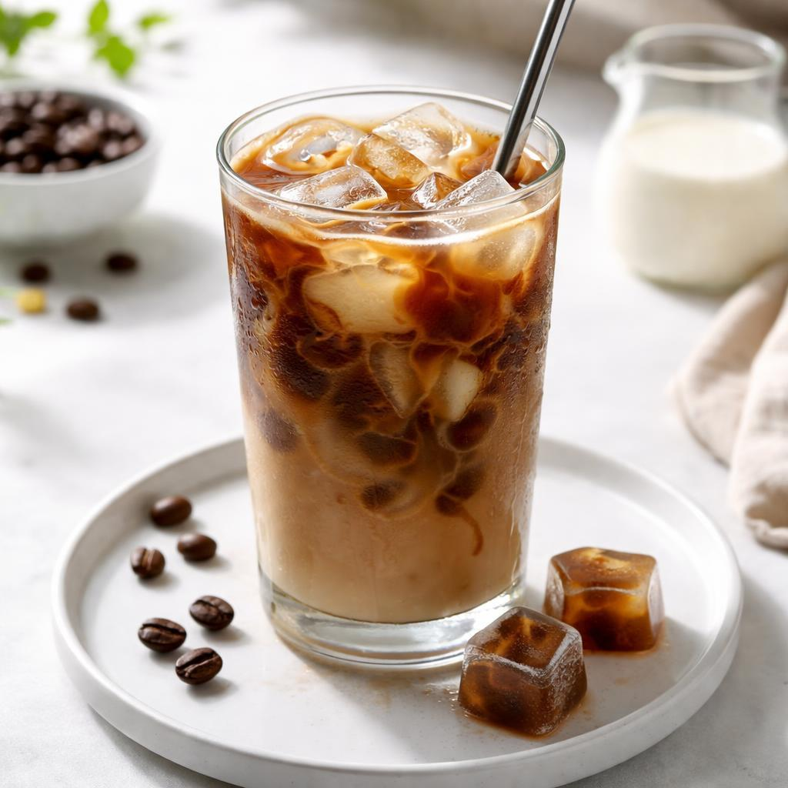
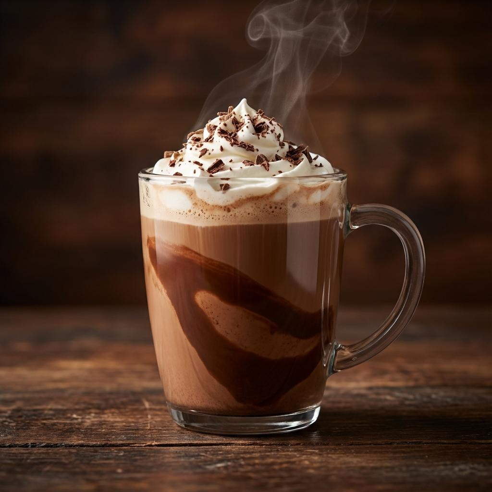
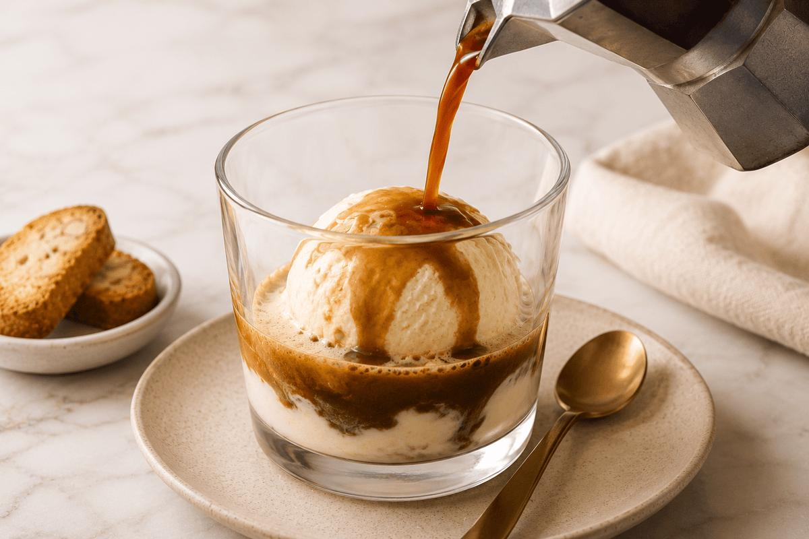

Receitas com Café
Descubra novas maneiras de apreciar o café. Explore receitas que combinam sabor, criatividade e diferentes formas de preparo.
Nossas Receitas
Café Gelado

Uma bebida refrescante que combina café, gelo e leite, ideal para dias quentes.
Ingredientes
- 100 ml de café preparado
- 100 ml de leite
- Gelo a gosto
- Açúcar a gosto
Modo de preparo
Prepare o café, deixe esfriar e coloque em um copo com gelo. Acrescente o leite e misture.
Cappuccino Cremoso
Uma combinação de café, leite e espuma cremosa, perfeita para qualquer momento.
Ingredientes
- 50 ml de café expresso
- 150 ml de leite
- Canela a gosto
- Chocolate em pó a gosto
Modo de preparo
Prepare o café, aqueça o leite e faça espuma. Misture e finalize com canela ou chocolate em pó.
Mocha

Uma bebida que combina a intensidade do café com o sabor do chocolate.
Ingredientes
- 50 ml de café expresso
- 150 ml de leite
- 20 g de chocolate em pó
- Chantilly opcional
Modo de preparo
Misture o chocolate ao café quente. Acrescente o leite aquecido e finalize com chantilly, se desejar.
Affogato

Uma sobremesa italiana que combina a intensidade do café expresso com a cremosidade do sorvete
Ingredientes
- 1 bola de sorvete de creme
- 50 ml de café expresso quente
- Chocolate ralado a gosto
Modo de preparo
Coloque uma bola de sorvete em uma taça. Prepare o café expresso e despeje sobre o sorvete. Finalize com chocolate ralado e sirva imediatamente.